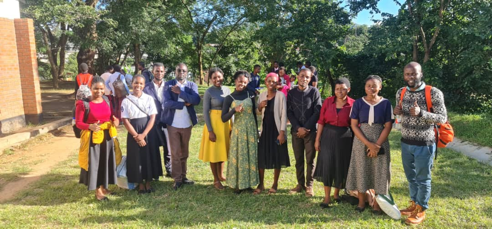
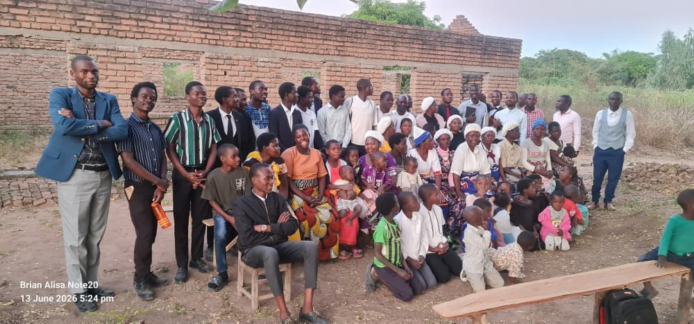
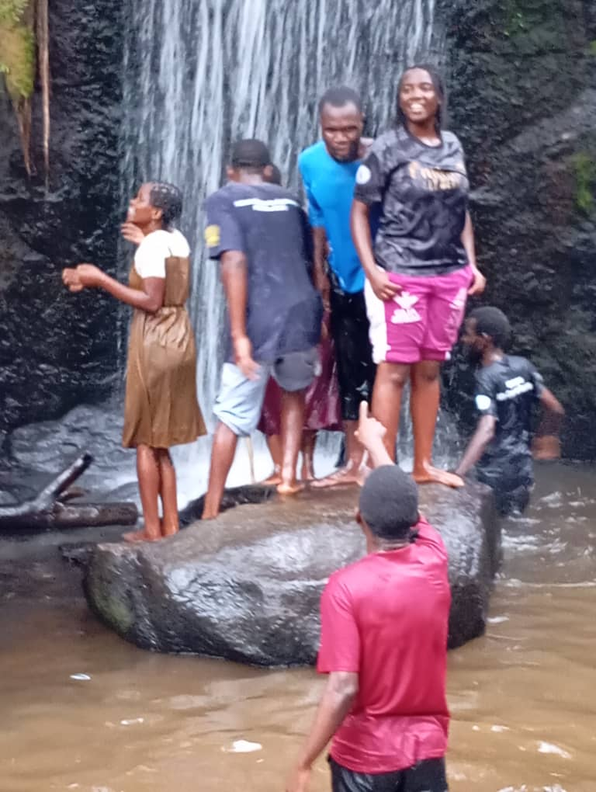

CrusadeCity Evangelism Crusade
Proclaiming the everlasting gospel to the masses, planting churches, and leading souls to Christ through powerful public preaching.

Medical MissionMedical Missionary Training & Lessons
Learning natural remedies, healthy living practices, and running free health expos to use health evangelism as the right hand of the gospel.

Hiking & FellowshipMountain Hiking
Strengthening brotherly love, enjoying nature walks, and engaging in outdoor group prayers out in God's great creation.